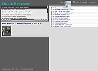
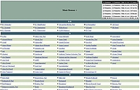

Music Browser
Dieser Artikel wurde für die folgenden Ubuntu-Versionen getestet:
Ubuntu 14.04 Trusty Tahr
Artikel für fortgeschrittene Anwender
Dieser Artikel erfordert mehr Erfahrung im Umgang mit Linux und ist daher nur für fortgeschrittene Benutzer gedacht.
Zum Verständnis dieses Artikels sind folgende Seiten hilfreich:
 Ein Streaming-Server verteilt die auf dem Server gespeicherte Musik bequem im lokalen Netzwerk (LAN) oder auch über das Internet. Zum Abspielen kann fast jeder beliebige Audio-Player genutzt werden, sofern
Ein Streaming-Server verteilt die auf dem Server gespeicherte Musik bequem im lokalen Netzwerk (LAN) oder auch über das Internet. Zum Abspielen kann fast jeder beliebige Audio-Player genutzt werden, sofern
die passenden Codecs installiert sind und
das Abspielprogramm mit Wiedergabelisten umgehen kann
Music Browser  ist ein besonders schlankes Exemplar dieser Programm-Gattung, das speziell dann interessant wird, wenn die vorhandene Hardware für den Server extrem schwach ist (z.B. NSLU2, Alix-Boards oder SheevaPlug). Bisher werden allerdings nur MP3-Dateien berücksichtigt.
ist ein besonders schlankes Exemplar dieser Programm-Gattung, das speziell dann interessant wird, wenn die vorhandene Hardware für den Server extrem schwach ist (z.B. NSLU2, Alix-Boards oder SheevaPlug). Bisher werden allerdings nur MP3-Dateien berücksichtigt.
Falls gerade kein Audio-Player zur Verfügung steht: auch kein Problem, der Flash-basierte JW Player ist in die Weboberfläche integriert. Dieser Player ist aber nur bei nicht-kommerzieller Nutzung kostenlos - andere Nutzungsarten erfordern den Kauf einer Lizenz.
Alternative Streaming-Server sind im Artikel Musik verwalten zu finden, weitergehende Möglichkeiten in Artikel Internetradio erläutert.
Installation¶

Voraussetzungen¶
Das Programm benötigt einen beliebigen Webserver und PHP (ab Version 4.2). Empfehlenswert sind die Webserver lighttpd oder Cherokee (letzterer aus den offiziellen Paketquellen oder via PPA installierbar), aber auch der Einsatz von Apache ist problemlos möglich. Weitere Informationen zur Installation finden sich in den Artikeln:
Herunterladen¶
Music Browser kann als .zip-Archiv von SourceForge  (Version 0.24) oder Github (Version 0.25 oder neuer) heruntergeladen werden. Anschließend entpackt [1] man das Archiv und verschiebt den entstandenen Ordner mit Root-Rechten [2] nach /var/www/. Damit ist die Installation abgeschlossen.
(Version 0.24) oder Github (Version 0.25 oder neuer) heruntergeladen werden. Anschließend entpackt [1] man das Archiv und verschiebt den entstandenen Ordner mit Root-Rechten [2] nach /var/www/. Damit ist die Installation abgeschlossen.
Hinweis!
Fremdsoftware kann das System gefährden.
Alternativ kann man den aktuellen Quellcode mit Git über die Projektseite herunterladen:
mkdir ~/musicbrowser && cd ~/musicbroswer git clone git://github.com/henrik242/musicbrowser.git
Konfiguration¶
Die Konfiguration ist sehr einfach – man muss in der Datei /var/www/musicbrowser/index.php nur den Pfad zum Medienordner angeben [3]:
# Where your music is available on the file system (e.g. "/mnt/my_music/mp3") # Leave empty to use the current directory. Using the current directory will # also enable fwd/rwd in players like Winamp. 'path' => "/Pfad/zum/Musikordner",
Alternativ kann man Musikdateien auch direkt im Ordner /var/www/musicbrowser/ abspeichern. Dazu sind je nach Gegebenheit Root-Rechten erforderlich.
Die folgenden Einstellungen sind optional – also nicht zwingend erforderlich. Wer mag, darf gleich zur Verwendung springen.
Skins¶
|  |
| angepasstes Design |
Um die eher schlichte Weboberfläche auszutauschen, braucht man nur die Datei /var/www/musicbrowser/template.inc zu ersetzen. Beispiele sind auf Github zu finden. Fortgeschrittene können diese selbst anpassen – HTML- und CSS-Kenntnisse vorausgesetzt [4].
Cover¶
Wenn sich im Medienordner (und dessen Unterordnern) Bilddateien befinden, werden diese automatisch als Cover-Bilder angezeigt. Folgende Dateinamen werden dabei berücksichtigt:
cover.jpg
Cover.jpg
cover.gif
Cover.gif
folder.jpg
Folder.jpg
folder.gif
Folder.gif
Die Größe der Vorschaubilder kann in /var/www/musicbrowser/index.php angepasst werden:
# Cover thumbnail size 'thumbSize' => 100,
Favicon¶
Um ein Favicon zu verwenden, kopiert man dieses einfach in den Ordner /var/www/musicbrowser/. Nun muss noch die Datei /var/www/musicbrowser/template.inc angepasst bzw. editiert werden. Beispiel:
<head> <title>Music Browser</title> <!-- die folgende Zeile sorgt fuer ein Favicon im Browser --> <link rel="shortcut icon" type="image/x-icon" href="favicon.ico"> <meta http-equiv="Content-Type" content="text/html; charset=utf-8">
Suchfunktion¶
Um eine einfache Suche zu aktivieren, trägt man das eigene Netzwerk in /var/www/musicbrowser/index.php ein. Beispiel:
# Array of regular expression (regexp) matches for hosts that are allowed to use
# server playback and slimserver playback, and to rebuild the search db, e.g.
# 'allowLocal' => array("/^10\.0\.0\./")
# Set to array() to disable.
'allowLocal' => array("/^192\.168\.178\./"),Anschließend muss noch ein Suchindex mit "rebuild search db" erzeugt werden. Der Ort des Suchindex kann über
# Location of the search db text file. Leave empty to disable search. 'searchDB' => "/tmp/musicbrowser-searchdb.txt",
angepasst werden. Nun steht ein Eingabefeld zur Suche innerhalb der Musiksammlung zur Verfügung. Der Suchbegriff muss mindestens 3 Zeichen lang sein.

Zugriff einschränken¶
Wer nicht möchte, dass jeder x-beliebige auf den eigenen Musik-Server zugreifen kann, kann einen Zugriffsschutz einrichten. Dazu verwendet man einfach die vorhandenen Mechanismen des jeweiligen Webservers, also die Datei /etc/lighttpd/conf-enabled/10-auth.conf beim lighty oder .htaccess beim Apache.
Verwendung¶
|  |
| Standard-Design |
In einem beliebigem Webbrowser gibt man nun die Adresse des Servers ein:
http://<Server-IP>/musicbrowser/oderhttp://localhost/musicbrowser/(nur direkt auf dem Server selbst möglich)
Das ist alles.
Problembehebung¶
Deutsche Lokalisierung¶
Wenn die sparsam verwendeten englischen Begriffe stören, können diese in den Dateien
template.inc (Oberfläche)
musicbrowser.js (Meldungen)
musicbrowser.php (Meldungen)
übersetzen werden.
Links¶
Skins
- alternative Weboberflächen
xspf.org
- alternative Flashplayer (erfordern Änderungen am Quellcode)Musik verwalten - Übersichtsartikel

- Erstellt mit Inyoka
-
 2004 – 2017 ubuntuusers.de • Einige Rechte vorbehalten
2004 – 2017 ubuntuusers.de • Einige Rechte vorbehalten
Lizenz • Kontakt • Datenschutz • Impressum • Serverstatus -
Serverhousing gespendet von